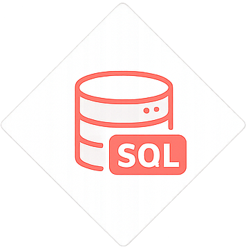
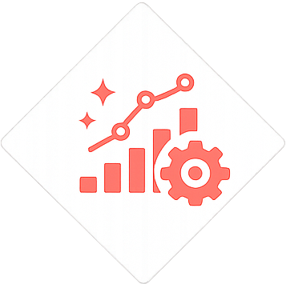
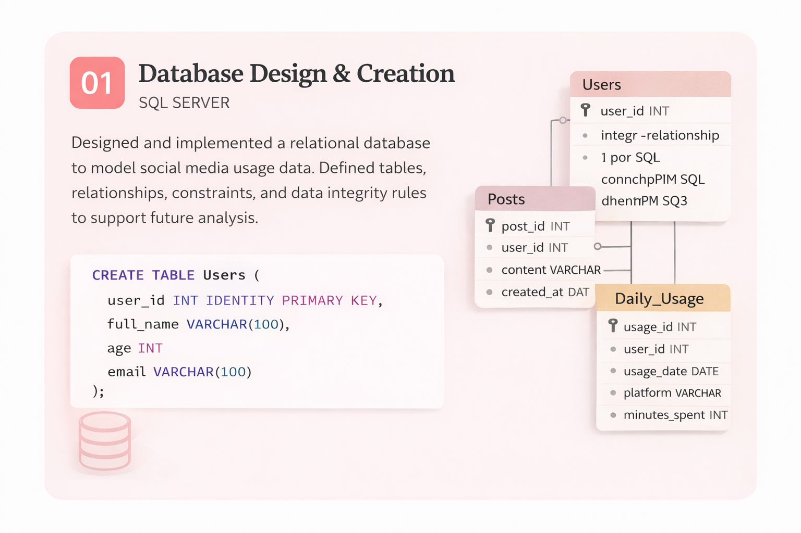
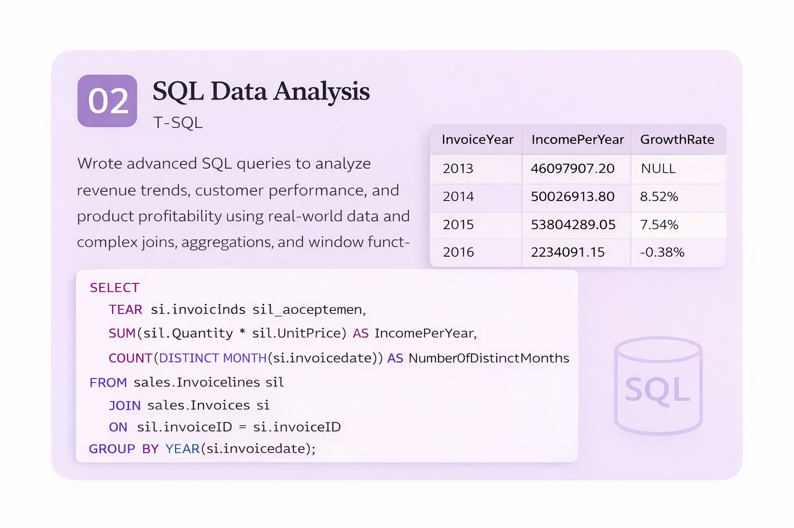
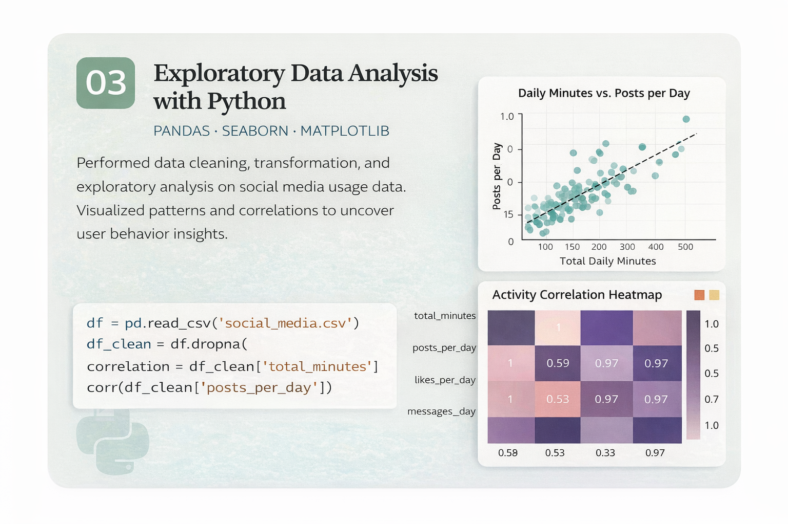
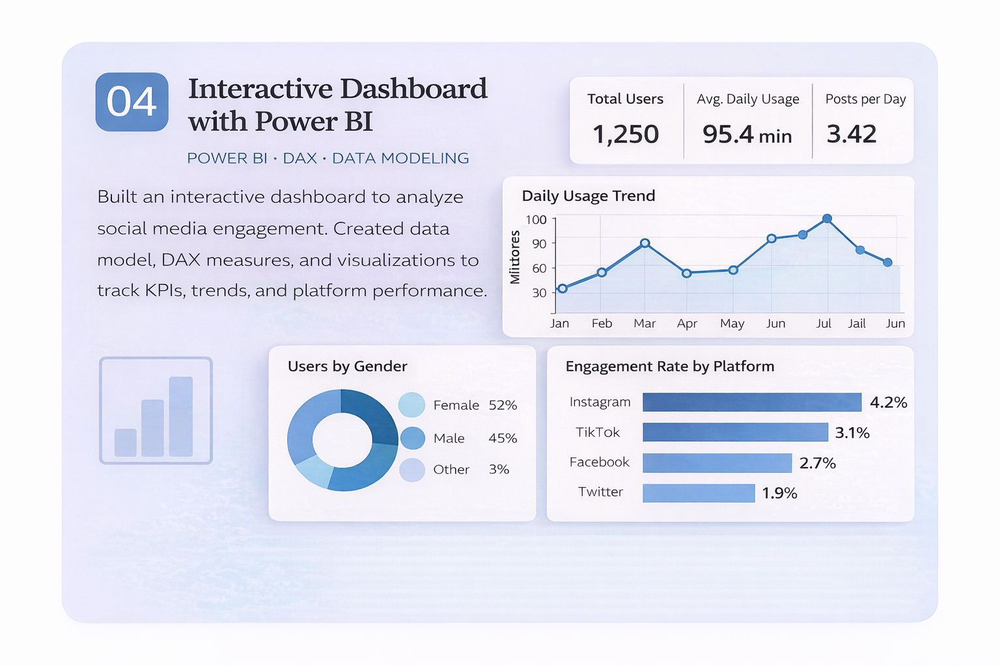

Data Analysis
Exploring datasets to identify patterns, trends, and actionable insights that support business decisions.
Exploring datasets to identify patterns, trends, and actionable insights that support business decisions.

Writing complex SQL queries to extract, clean, and analyze data from relational databases.

Building interactive dashboards using Power BI to communicate insights clearly and effectively.
Transforming raw data into structured datasets using Python (Pandas) for accurate analysis and insights.

Designed and implemented a relational database, including table structures, primary and foreign keys, and data constraints. Built a scalable data model to support future analytical processes.

Analyzed large datasets using advanced SQL queries, including joins, aggregations, and window functions to extract business insights such as revenue trends, top customers, and product performance.

Performed data cleaning, transformation, and exploratory data analysis using Pandas. Created visualizations with Matplotlib and Seaborn to uncover patterns, trends, and actionable insights.

Built interactive dashboards using Power BI to analyze trends, identify key performance metrics, and support data-driven decision making.